Spécialisée dans la location de grand luxe à Paris, Cannes, Nice et Monaco, Luxury Club met à votre disposition une flotte d’exception et un service sur mesure.
Laissez vous guider par le plaisir… Voici les véhicules de luxe que nous vous proposons : Ferrari, Lamborghini, Porsche, sont les plus connues mais bien d’autres modèles vous sont proposés selon vos goûts, vos envies, vos impératifs.
Installez-vous confortablement à bord de la limousine de luxe ou du véhicule haut de gamme de votre choix et, en toute sérénité, laissez-vous conduire. Ponctualité, discrétion et professionalisme seront les crédos de votre chauffeur.
Parce que votre mariage doit être le plus beau jour de votre vie, que la fête doit être la plus belle, nous pouvons mettre en place la location d’un véhicule de luxe pour votre mariage. La collection mariage s’adapte à vos envies. Ces véhicules de luxe viendront couronner votre bonheur.
Quelques jours au calme ? Cet espace a pour but de vous proposer des offres prestigieuses, qui vous sont exclusivement réservées. Fruit d’une collaboration avec nos partenaires, ces propositions sont uniques et varient en fonction de vos désirs, des nouveautés ou encore des saisons.
Claudie Derchu nous fait partager son stage de Pilotage au volant d’une Aston Matin
Claudie Derchu âgée de 62 ans et heureuse retraitée, nous fait partager l'expérience de son stage de Pilotage au volant d'une Aston Matin sur le circuit de Montlhéry. 1/ Pour quell…Claudie Derchu âgée de 62 ans et heureuse retraitée, nous fait partager l'expérience de son stage de Pilotage au volant d'une Aston Matin sur le circuit de Montlhéry. 1/ Pour quelle occasion avez-vous participé à un stage de pilotage ? CD : Le stage fut l'objet de mon cadeau de Noël de la part de mes deux enfants Adeline et Thibault. 2/ Qu'est-ce qui vous attire chez Aston Martin ? CD : A vrai dire ce n'est pas moi qui ai choisi l'Aston Martin ; c'est la voiture qui a été conseillée aux enfants, peut-être au vu de mon âge et du fait qu'il s'agissait de ma première expérience sur un circuit... et puis c'est la voiture de James ce n'est pas rien ! 3/ La conduite sur circuit est-elle si différente que sur la route ? CD : Ah ! Que oui ! C'est un vrai bonheur que de pouvoir couper les virages à sa guise et appuyer sur l'accélérateur sans la peur du gendarme ou du radar ! 4/ La prise en main du véhicule se fait-elle facilement ? CD : En ce qui me concerne la prise en main ne fut pas évidente du point de vue des vitesses ; j'ai toujours entretenu de très bonnes relations avec les leviers de vitesse quelque soit le véhicule, hors là, les « vitesses séquentielles » furent très déroutantes, à la limite du « handicap ». Ceci dit, cela m'a valu une petite faveur, les deux premiers tours n'ayant pas été terribles à cause de ces « foutues » vitesses, le jeune et gentil moniteur m'accordé un tour supplémentaire ! Indépendamment des vitesses, la voiture « s'apprivoise » très bien, le moniteur met bien en confiance, je me suis tout de suite sentie à l'aise et en sécurité. 5/ Recommanderiez-vous LUXURY CLUB a des proches ? CD : Bien sûr, si l'occasion se présente je ne manquerai pas de recommander Luxury Club à des proches et moins proches avec commentaires à l'appui. CD : Voilà pour les réponses aux questions posées maintenant j'y vais de mon petit commentaire perso : L'accueil est vraiment très agréable, chacun des intervenants a un petit mot sympathique et toujours le sourire. J'ai été très émue par le bruit des moteurs tant à l'intérieur du véhicule que sur le stand, j'étais renvoyée à mon adolescence quand, interdite de sortir seule le soir, j'obligeais ma maman à m'accompagner sur la corniche où se tenait une des épreuves de vitesse du rallye du Touquet qui, à l'époque, était un rallye international (peut-être l'est-il encore ?). Ah ! Cette odeur de ricin ! Puis, à partir du moment où j'ai eu mon permis le plaisir de conduire ne m'a plus quittée ! Il y aura donc récidive, je ne sais encore sur laquelle de vos « grandes dames » je jetterai mon dévolu, le choix sera difficile, je me permettrai probablement de vous demander conseil. 2009-10-14 2009-09-16 Mme et M. Fabio Roggero, actifs dans la gestion de patrimoine et le « familly office », sont les heureux parents d'Esther 15 ans 1/2 et de Loris 12 ans 1/2. Ils nous font partager leur expérience de déplacement en jet privé à l'occasion d'une soirée passée à Monte Carlo.
2009-09-16
Mme et M. Fabio Roggero, nous font partager leur expérience de déplacement en jet privé
Mme et M. Fabio Roggero, actifs dans la gestion de patrimoine et le « familly office », sont les heureux parents d'Esther 15 ans 1/2 et de Loris 12 ans 1/2. Ils nous font partager …Mme et M. Fabio Roggero, actifs dans la gestion de patrimoine et le « familly office », sont les heureux parents d'Esther 15 ans 1/2 et de Loris 12 ans 1/2. Ils nous font partager leur expérience de déplacement en jet privé à l'occasion d'une soirée passée à Monte Carlo. 1/- Pour quelle occasion, avez-vous sollicité les services d'un avion privé ? FR : Nous avons eu recours à vos services à l'occasion de la finale de la Super Cup de l'UEFA pour laquelle mon fils et moi avions reçu des invitations. Nous avons apprécié la flexibilité et la rapidité de ce moyen de déplacement, seule solution répondant aux contraintes de temps qui nous étaient imposées. 2/- Quels services souhaitiez-vous trouver dans un vol privé ? FR : Il est clair que les services proposés par votre compagnie ne sont pas à la portée de toutes les bourses, cependant, il est des circonstances où vos prestations s'avèrent très précieuses et surtout d'un grand confort d'utilisation. J'ai donc trouvé ce que je cherchais : rapidité, efficacité et un accueil irréprochable. 3/- Vous avez sollicité un service de voiture avec chauffeur. Est-ce un plus d'avoir eu un seul interlocuteur au sein de LUXURY CLUB ? FR : Oui ce fut un vrai plus. A la sortie de l'aéroport de Nice nous attendait une voiture pour nous transporter à Monaco. Votre collaborateur, Monsieur Decourchelle, s'est chargé de tout organiser à notre convenance avec une grande efficacité. L'avion affrété ainsi que le mini van mis à notre disposition nous ont permis d'emmener avec nous mon épouse, ma fille ainsi que deux amis qui ont profité de l'occasion pour passer la soirée à Monte-Carlo. 4/- Recommanderiez-vous LUXURY CLUB à vos proches ? FR : Je recommanderais sans hésiter LUXURY CLUB à toute personne devant avoir recours à des services particuliers impliquant rapidité, confort et, n'ayons pas peur des mots, une certaine classe. Voici en quelques mots mes impressions sur notre collaboration que je renouvellerai avec plaisir aussitôt que l'occasion se présente. 2009-09-16 2009-12-16 François Vieau âgé de 53 ans, travaillant dans la finance, marié et heureux papa de 4 enfants (29, 26, 23 et 15 ans) nous fait partager l'expérience de son stage de pilotage au volant d'une Porsche 997 GT3 RS sur le circuit de Trappes.
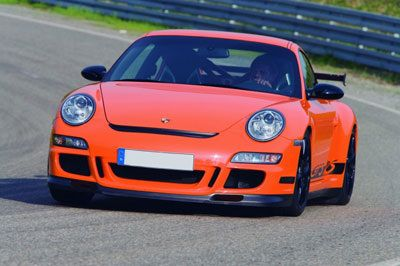
2009-12-16
François Vieau nous fait partager son stage de Pilotage au volant d’une Porsche 911 GT3
François Vieau âgé de 53 ans, travaillant dans la finance, marié et heureux papa de 4 enfants (29, 26, 23 et 15 ans) nous fait partager l'expérience de son stage de pilotage au vol…François Vieau âgé de 53 ans, travaillant dans la finance, marié et heureux papa de 4 enfants (29, 26, 23 et 15 ans) nous fait partager l'expérience de son stage de pilotage au volant d'une Porsche 997 GT3 RS sur le circuit de Trappes. 1/ Pour quelle occasion avez-vous participé à un stage de pilotage ? FV : C'était le cadeau d'anniversaire de mon fils Pierre-François, âgé de 29 ans qui souhaitait partager avec moi ses propres sensations et me faire un cadeau qui reste en mémoire, objectifs pleinement atteints, ai tout dans la tête... 2/ Est-ce qu'une Porsche GT3 RS est si différente d'une voiture de tourisme ? FV : Bien sur, c'est fou ! Surtout au niveau du freinage, si puissant et autorisant un freinage de dernière seconde, impressionnant...et que dire de la puissance d'accélération, tout simplement enivrant ! C'est une voiture rivée au sol, elle bénéficie d'une tenue de route sans égale, à ma connaissance en tous cas. 3/ La conduite sur circuit est-elle si différente que sur la route ? FV : Oui surtout les 3 points de virage, not so easy... Mais on peut profiter pleinement des ressources de la voiture. A ne pas faire sur route ouverte ! 4/ La prise en main du véhicule se fait-elle facilement ? FV : Aucun problème et le tour de chauffe avec l'instructeur très pro et sympa lève toutes les angoisses. Après l'excitation prend le dessus. Un peu d'appréhension au moment de tourner la clef puis dès que le 6 cylindres se met à vibrer la magie fait le reste. 5/ Recommanderiez-vous LUXURY CLUB a des proches ? FV : Oui, mais juste une suggestion les lignes droites sont trop courtes pour profiter de la puissance de l'auto. 2009-12-16 2009-04-15 Mme Isabelle VINCIGUERRA (40 ans) et M. Arnaud VINCIGUERRA (43 ans) sont les heureux parents de deux garçons âgés de 12 et 9 ans. Isabelle nous parle du stage de pilotage en hélicoptère offert à son époux.
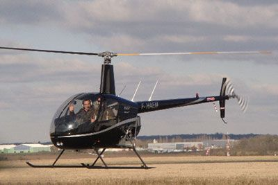
2009-04-15
Stage d’initiation au pilotage en Hélicoptère
Mme Isabelle VINCIGUERRA (40 ans, a travaillé chez Hermès Parfum aujourd'hui femme au foyer) et M. Arnaud VINCIGUERRA (43 ans, Directeur de Sophis, société spécialisée dans l'élabo…Mme Isabelle VINCIGUERRA (40 ans, a travaillé chez Hermès Parfum aujourd'hui femme au foyer) et M. Arnaud VINCIGUERRA (43 ans, Directeur de Sophis, société spécialisée dans l'élaboration de logiciels financiers) sont les heureux parents de deux garçons âgés de 12 et 9 ans. Isabelle nous parle du stage de pilotage en hélicoptère offert à son époux. 1- A quelle occasion avez-vous offert un LUXURY PASS à votre mari ? IV : Pour la Saint Valentin ! Ce qui est bien tombé cette année car comme ceux qui l'ont fêté le savent le 14 est tombé un samedi. Donc j'ai pu lui faire la surprise et il a fait son baptême l'après-midi même. Elle est sympa sa femme, non... Non sans plaisanter on a pas l'habitude de se faire de cadeaux pour la fête des amoureux mais j'avais envie de changer et de lui faire une petite surprise. 2- Pourquoi lui avoir choisi un stage d'initiation au pilotage en hélicoptère ? IV : Parce qu'il adore les hélico... Pour tout vous dire on lui a offert un stage d'initiation de 45 mn mais s'il avait pu, il en aurait bien bien profité plus. Je pense qu'une heure ou une heure et demie lui aurait convenu. S'il ne passait pas autant de temps au travail il passerait son permis de pilote privé sans hésiter. De toute façon il avait envie de connaître l'envers du décor et de comprendre ce qu'il se passe derrière les commandes. On a la chance de partir prochainement au Botswana et on projette de survoler les chutes « Victoria » en hélicoptère, donc il sera un peu mieux comment fonctionne le pilotage. 3- Quel a été son plus beau souvenir ? IV : Je crois que sont les sensations quand on quitte le sol et qu'on devient maître des déplacements de la machine en 3 dimensions. Il ne pensait pas qu'il y aurait autant de commandes. En fait contrairement à un avion, où on pense à défaut que c'est plus compliqué en pilotage, là on a en plus les déplacements horizontaux. Moi c'est pas trop mon truc les hélicoptères car c'est un peu trop confiné. Ce qui est étonnant d'ailleurs c'est qu'Arnaud a le vertige et là ça ne le gêne pas du tout. 4- A l'avenir recontacteriez-vous LUXURY CLUB pour d'autres évènements ? IV : Oui ça c'est sur. Je les recommande déjà auprès de nos connaissances. C'est vrai que le pilote est vraiment sympa et est investi de sa mission. On sent que ce sont vraiment des passionnées et il s'est vraiment intéressé à savoir si mon époux en avait profité, s'il était ravis de son stage. Le seul bémol vient de l'accueil. On arrive dans un salon et il n'est pas précisé qu'il faut aller dans le bureau du fond pour se faire connaître. C'est dommage mais ça ne gâche pas le reste, heureusement... entre nous c'est un point à améliorer. Sinon je suis intéressée pour organiser un séjour sur un yacht ou un voilier. Ou pourquoi pas offrir un stage de pilotage voiture pour une prochaine occasion. Mais je ne sais pas si ça branchera Arnaud. A voir... En tous les cas on sent qu'ils sont à l'écoute et qu'on ne tombe sur un produit standardisé. Ils ont pris soin de me rappeler pour savoir si tout s'était bien passé. On a le sentiment que c'est ouvert et qu'on peut concocter des petites idées week-end ou surprise à la carte. Et ça fait souvent la différence. 2009-04-15 2009-03-18 Mme Mallet (44 ans, Chef d'Entreprise en Relations Humaines) et son époux (50 ans, Chef de projet pour le groupe Shlumberger), heureux parents de trois enfants, nous parlent de leur week-end en Aston Martin V8 Roadster.
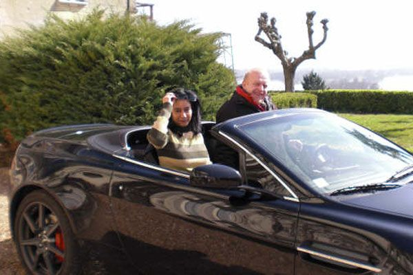
2009-03-18
Week-end en Aston Martin V8 Roadster
Mme Mallet (44 ans, Chef d'Entreprise en Relations Humaines) et son époux (50 ans, Chef de projet pour le groupe Shlumberger), heureux parents de trois enfants, nous parlent de leu…Mme Mallet (44 ans, Chef d'Entreprise en Relations Humaines) et son époux (50 ans, Chef de projet pour le groupe Shlumberger), heureux parents de trois enfants, nous parlent de leur week-end en Aston Martin V8 Roadster. 1- Comment vous est venue l'envie de prendre possession, pour un week-end, d'une Aston Martin ? MM : Et bien, je souhaitais faire une surprise mémorable à mon mari pour ses 50 ans. Ce que j'ignorais c'est qu'il en rêvait depuis son plus jeune âge. Il me l'a avoué hier soir en se remémorant nos bons moments. Il ne pouvait pas espérer mieux... Et moi qui hésitais avec une italienne ! En fait, il préfère de loin les belles anglaises. Enfin, tout le monde en a bien profité, même les enfants. Ils n'ont pas conduit bien sûr mais ont vécu un moment privilégié avec leur papa. 2- Pouvez-vous nous commenter votre séjour ? MM : Nous sommes partis de Magny-les-Hameaux (78, proche de Versailles) direction Saumur, pour rejoindre le reste de la famille qui nous attendait dans la propriété de nos beaux parents. Ils habitent un petit village surplombant les hauteurs de Saumur. Autant vous dire que le premier trajet sur autoroute a permis à Louis, mon époux, de se mettre en jambe avec cette Aston Martin, qui fut sienne pour le week-end. Tout compte fait, à part le samedi soir où nous lui avons offert ses cadeaux et dîné en famille, il a passé le reste du temps dans la voiture... 3- Avez-vous une anecdote à nous faire partager ? MM : Pas vraiment si ce n'est les montées en régime et le bruit de ce moteur qui est véritablement impressionnant, voir envoutant... Ah si, lorsque nous sommes partis remettre du carburant on a fait sensation à la petite station service du coin. Les gens ne regardaient plus que la voiture. C'est surtout le regard admiratif des enfants qui était touchant. Peut être le même que mon mari à son plus jeune âge... Et puis on a l'étrange sensation quand un feu tricolore repasse au vert, que les automobilistes attendent que l'Aston Martin démarre en premier. Certainement pour l'admirer et entendre rugir ce fabuleux V8. 4- Comment avez-vous connu LUXURY CLUB ? Recommanderiez-vous leurs services ? MM : Je les ai connus par l'intermédiaire d'un de leur partenaire, M. William Bonneton (Sté HéliParis) qui m'a recommandé à eux. Je les ai également retrouvés sur Internet. Les autres sociétés que j'ai contactées ne m'ont pas réservées le même accueil. Ils ont vraiment pris le temps de m'écouter. Et rien à redire sur la disponibilité et le service. Le véhicule a été livré à notre domicile pour parfaire la surprise et nous leur avons rendu sur Paris le dimanche soir. Pour répondre à votre deuxième question : oui, je les recommande déjà à ma famille et mes amis. Nous avons d'ailleurs l'intention de repartir pour un séjour dans une résidence secondaire à Villers-sur-Mer. Nous avons un appartement avec vue sur l'océan et nous souhaiterions partir avec des amis au volant de belles carrosseries. 2009-03-18 2015-03-23
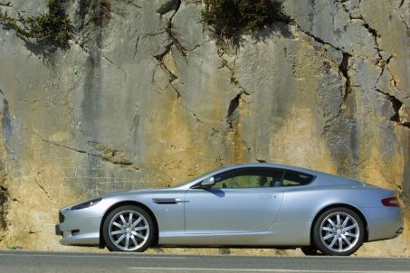
2015-03-23
Un joli cadeau déroutant!
Bonjour, J’ai souhaité faire une surprise pour l’anniversaire de mon mari qui ne se douta pas une seconde qu’un rêve de gosse allait se réaliser : conduire une Aston Martin. Ce fut…Bonjour, J’ai souhaité faire une surprise pour l’anniversaire de mon mari qui ne se douta pas une seconde qu’un rêve de gosse allait se réaliser : conduire une Aston Martin. Ce fut un réel plaisir d’avoir pu offrir 24 h de bonheur à mon mari grâce à la complicité du Luxury Club qui a mis tout en œuvre pour que la surprise soit à la hauteur de mes attentes. Merci pour leur participation. D.Tysebaert 2015-03-23 2009-04-15 Mme Isabelle VINCIGUERRA (40 ans) et M. Arnaud VINCIGUERRA (43 ans) sont les heureux parents de deux garçons âgés de 12 et 9 ans. Isabelle nous parle du stage de pilotage en hélicoptère offert à son époux.
2009-04-15
Stage d’initiation au pilotage en Hélicoptère
Mme Isabelle VINCIGUERRA (40 ans, a travaillé chez Hermès Parfum aujourd'hui femme au foyer) et M. Arnaud VINCIGUERRA (43 ans, Directeur de Sophis, société spécialisée dans l'élabo…Mme Isabelle VINCIGUERRA (40 ans, a travaillé chez Hermès Parfum aujourd'hui femme au foyer) et M. Arnaud VINCIGUERRA (43 ans, Directeur de Sophis, société spécialisée dans l'élaboration de logiciels financiers) sont les heureux parents de deux garçons âgés de 12 et 9 ans. Isabelle nous parle du stage de pilotage en hélicoptère offert à son époux. 1- A quelle occasion avez-vous offert un LUXURY PASS à votre mari ? IV : Pour la Saint Valentin ! Ce qui est bien tombé cette année car comme ceux qui l'ont fêté le savent le 14 est tombé un samedi. Donc j'ai pu lui faire la surprise et il a fait son baptême l'après-midi même. Elle est sympa sa femme, non... Non sans plaisanter on a pas l'habitude de se faire de cadeaux pour la fête des amoureux mais j'avais envie de changer et de lui faire une petite surprise. 2- Pourquoi lui avoir choisi un stage d'initiation au pilotage en hélicoptère ? IV : Parce qu'il adore les hélico... Pour tout vous dire on lui a offert un stage d'initiation de 45 mn mais s'il avait pu, il en aurait bien bien profité plus. Je pense qu'une heure ou une heure et demie lui aurait convenu. S'il ne passait pas autant de temps au travail il passerait son permis de pilote privé sans hésiter. De toute façon il avait envie de connaître l'envers du décor et de comprendre ce qu'il se passe derrière les commandes. On a la chance de partir prochainement au Botswana et on projette de survoler les chutes « Victoria » en hélicoptère, donc il sera un peu mieux comment fonctionne le pilotage. 3- Quel a été son plus beau souvenir ? IV : Je crois que sont les sensations quand on quitte le sol et qu'on devient maître des déplacements de la machine en 3 dimensions. Il ne pensait pas qu'il y aurait autant de commandes. En fait contrairement à un avion, où on pense à défaut que c'est plus compliqué en pilotage, là on a en plus les déplacements horizontaux. Moi c'est pas trop mon truc les hélicoptères car c'est un peu trop confiné. Ce qui est étonnant d'ailleurs c'est qu'Arnaud a le vertige et là ça ne le gêne pas du tout. 4- A l'avenir recontacteriez-vous LUXURY CLUB pour d'autres évènements ? IV : Oui ça c'est sur. Je les recommande déjà auprès de nos connaissances. C'est vrai que le pilote est vraiment sympa et est investi de sa mission. On sent que ce sont vraiment des passionnées et il s'est vraiment intéressé à savoir si mon époux en avait profité, s'il était ravis de son stage. Le seul bémol vient de l'accueil. On arrive dans un salon et il n'est pas précisé qu'il faut aller dans le bureau du fond pour se faire connaître. C'est dommage mais ça ne gâche pas le reste, heureusement... entre nous c'est un point à améliorer. Sinon je suis intéressée pour organiser un séjour sur un yacht ou un voilier. Ou pourquoi pas offrir un stage de pilotage voiture pour une prochaine occasion. Mais je ne sais pas si ça branchera Arnaud. A voir... En tous les cas on sent qu'ils sont à l'écoute et qu'on ne tombe sur un produit standardisé. Ils ont pris soin de me rappeler pour savoir si tout s'était bien passé. On a le sentiment que c'est ouvert et qu'on peut concocter des petites idées week-end ou surprise à la carte. Et ça fait souvent la différence. 2009-04-15 2014-01-15 Un couple et leurs 3 enfants, ont profité d'un magnifique yacht de 37m pour découvrir la corse. Il nous fait partager l'expérience de ce séjour inoubliable à bord de l'Arion.
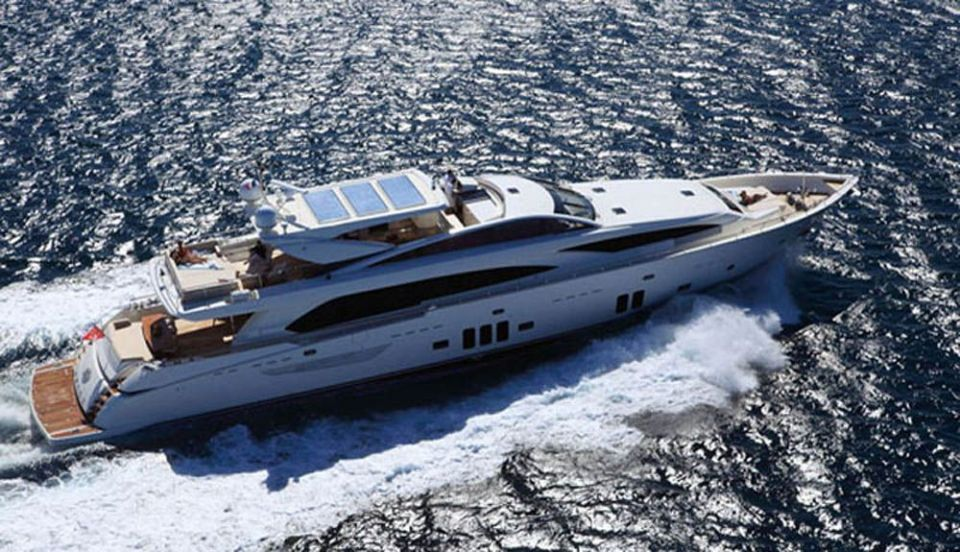
2014-01-15
Un couple et leurs 3 enfants, ont profité d’un magnifique yacht de 37m pour découvrir la corse.
2014-01-15 2015-03-23
2015-03-23
Un joli cadeau déroutant!
Bonjour, J’ai souhaité faire une surprise pour l’anniversaire de mon mari qui ne se douta pas une seconde qu’un rêve de gosse allait se réaliser : conduire une Aston Martin. Ce fut…Bonjour, J’ai souhaité faire une surprise pour l’anniversaire de mon mari qui ne se douta pas une seconde qu’un rêve de gosse allait se réaliser : conduire une Aston Martin. Ce fut un réel plaisir d’avoir pu offrir 24 h de bonheur à mon mari grâce à la complicité du Luxury Club qui a mis tout en œuvre pour que la surprise soit à la hauteur de mes attentes. Merci pour leur participation. D.Tysebaert 2015-03-23 2016-12-16
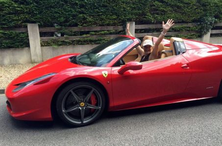
2016-12-16
Une cliente heureuse !
Hi all, My darling husband chose this amazing little red car for few days in Paris! Wow! Wow! Wow! We really had a ball and the service was just unbelievable!! Thank you Jean Marc …Hi all, My darling husband chose this amazing little red car for few days in Paris! Wow! Wow! Wow! We really had a ball and the service was just unbelievable!! Thank you Jean Marc for making this so special!! 2016-12-16 2009-06-17 Mme Catherine Lavit et M. Jean-Christophe Lavit (57 ans), gèrent une douzaine de restaurants sur l'Île de la Réunion. Ils ont déjà été propriétaires, d'une Aston Martin DB7, d'une Porsche 911 turbo et d'une Mercedes 500 SL.
2009-06-17
Au volant d’une Ferrari 575 SuperAmerica
Mme Catherine Lavit et M. Jean-Christophe Lavit (57 ans), gèrent une douzaine de restaurants sur l'Île de la Réunion. Ils ont déjà été propriétaires, d'une Aston Martin DB7, d'une …Mme Catherine Lavit et M. Jean-Christophe Lavit (57 ans), gèrent une douzaine de restaurants sur l'Île de la Réunion. Ils ont déjà été propriétaires, d'une Aston Martin DB7, d'une Porsche 911 turbo et d'une Mercedes 500 SL. Aujourd'hui ils préfèrent louer et changer régulièrement de voitures sans avoir de contraintes. 1- Qu'est-ce qui vous a séduit chez Ferrari ? JCL : Le nom, le mythe Ferrari ! J'ai donc loué chez LUXURY CLUB une 575 Superamerica d'une impressionnante facilitée de conduite. J'avais déjà essayé une F430, mais rien à voir... La Superamerica est « EXTRAORDINAIRE ». Belle, confortable (et oui c'est possible) et un son stupéfiant due à une ligne complète d'échappement en inox. J'ai enfin compris pourquoi Ferrari était un MYTHE !!! Et je l'ai encore mieux assimilé sur la route. Avec plus de 550ch (Merci Coyotte...), toutes les voitures se rangent pour vous laisser passer et lorsque vous vous garez c'est l'attroupement. On en arrive même à se sentir gêné. Les questions sont sympas et le sourire est sur tous les visages, le mythe, toujours le mythe !!! Sachant que si vous avez de la famille et beaucoup d'amis, vous devrez obligatoirement faire le tour du quartier ou le tour de la ville. 2- Pour qu'elle occasion avez-vous loué cette voiture ? JCL : Nous avons une propriété proche de Tours ce qui me permet d'assouvir notre 2ème passion la Chasse, la première étant la pêche. Nous avons donc profité d'un voyage de 5 jours en métropole à l'occasion de nos 30 ans de mariage pour louer ce véhicule ! 3- Je crois que votre épouse est détentrice d'un record un peu particulier, pouvez-vous nous en dire plus ? JCL : Oui, la pêche sportive n'est pas l'apanage des hommes puisque le plus gros marlin pris à ce jour est celui pêché par mon épouse, le 12 octobre 2003 dans les eaux de La Réunion. Il s'agissait d'un marlin bleu de 551 kilos pris avec une ligne de 130 livres, après 3h30 de combat ! Deux autres records sont détenus par Catherine pour un thon Albacore de 96,600 kg et un Wahoo de 49 kg pêchés en 2006 4- Qu'est-ce qui vous à séduit chez LUXURY CLUB ? JCL : Le dynamisme, l'efficacité et un service sur mesure : livrée à la descente de l'avion, papiers administratifs prêts, la voiture était impeccable et le tout s'est passé très rapidement. Je vais prochainement faire de nouveau appel à LUXURY CLUB, mais que louer après une Superamerica ? Peut-être la nouvelle California ? Photo du record de Mme Lavit 2009-06-17 2014-01-15 Un couple et leurs 3 enfants, ont profité d'un magnifique yacht de 37m pour découvrir la corse. Il nous fait partager l'expérience de ce séjour inoubliable à bord de l'Arion.
2014-01-15
Un couple et leurs 3 enfants, ont profité d’un magnifique yacht de 37m pour découvrir la corse.
2014-01-15 2016-05-27
2016-05-27
Road Trip By LUXURY CLUB
Hello Luxury Club, We had a great day, both animated by our guide that manages to hand the Master Trip Road vehicles with your dreams !!!! We are quite impressed with our day and I…Hello Luxury Club, We had a great day, both animated by our guide that manages to hand the Master Trip Road vehicles with your dreams !!!! We are quite impressed with our day and I think we will meet again soon so this formula seduced us. Thank you and see you soon !!! 2016-05-27 2017-05-24
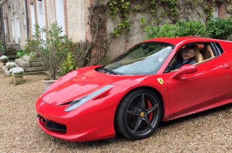
2017-05-24
WEEK-END EN TOURAINE AVEC MA 458
J’ai adoré la complicité de Jean-Marc et Florent, leur enthousiasme et leur volonté pour rendre possible l’impossible. Michel en a rêvé, Luxury Club l’a fait. Anniversaire surprise…J’ai adoré la complicité de Jean-Marc et Florent, leur enthousiasme et leur volonté pour rendre possible l’impossible. Michel en a rêvé, Luxury Club l’a fait. Anniversaire surprise, cadeau surprise, et voilà Michel, le porschiste, au volant d’une Ferrari. Il est sur un petit nuage. « ENORME, INOUBLIABLE, FABULEUX !!, écrira-t-il après à ses amis, avant d’ajouter : La 458 est une des meilleures machines roulantes qui existent. Sur autoroute bien sûr (Coyote obligatoire) c’est déjà stratosphérique, mais sur petite route c’est divin. Ça pousse tout le temps sans qu’on ne puisse jamais approcher aucune limite (du moins en ce qui me concerne). Et ce bruit ! ». Le bonheur. Le bonheur pour moi aussi. La conduite souple et puissante. Le vrombissement qui attire le regard sympathique et admiratif des passants. Les amis (garçons surtout, bizarre…) stationnés des heures devant la voiture, puis derrière, puis de chaque côtés, portes ouvertes, puis fermées, toit ouvert, puis fermé… tu m’emmènes faire un petit tour ? routes départementales droites, ou sinueuses. La campagne tourangelle est vraiment belle ! Merci Florent, merci Jean-Marc. La prochaine fois, ce sera peut-être la toute nouvelle Lamborghini ! 2017-05-24 2016-04-05
2016-04-05
CLAUDE SHARES WITH US A WEEKEND IN FERRARI
A quick note to thank you again for this wonderful weekend I just go and share with you some photos (especially for those who love exceptional vehicles ) .The Ferrari is amazing, w…A quick note to thank you again for this wonderful weekend I just go and share with you some photos (especially for those who love exceptional vehicles ) .The Ferrari is amazing, would say my son ( even if he's not interested at all... ). A real pleasure , an unforgettable memory , a dream car for all car fans . A hostel near Sens Villeneuve the Archbishop to give a goal to the circuit and enjoy a good dinner with Sylvie . One Wonderful Sunday ensoleillé.Encore thank you all for this great gift and a very big thank you especially to Benoit and Jean Marc who made this great moment with LUXURY CLUB . 2016-04-05 2015-12-02
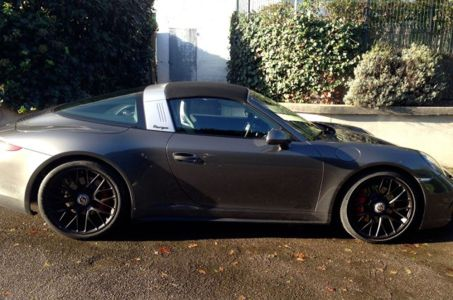
2015-12-02
M. et Mme Cazayous au volant d’un Targa GTS
Prestation de qualité à la hauteur de la magnifique targa GTS. Week end inoubliable au volant de la sublime sportive. Merci à Luxury club. 2015-12-02 2016-09-07
2016-09-07
Wonderful !
Super car these Porsche911 , the MUST ! Everything went well and super welcome in CANNES. Rental to renew, I would not fail to ask you !!! 2016-09-07 2009-09-16 Mme et M. Fabio Rog…Super car these Porsche911 , the MUST ! Everything went well and super welcome in CANNES. Rental to renew, I would not fail to ask you !!! 2016-09-07 2009-09-16 Mme et M. Fabio Roggero, actifs dans la gestion de patrimoine et le « familly office », sont les heureux parents d'Esther 15 ans 1/2 et de Loris 12 ans 1/2. Ils nous font partager leur expérience de déplacement en jet privé à l'occasion d'une soirée passée à Monte Carlo.
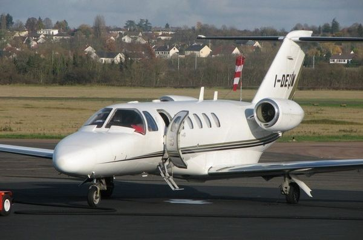
2009-09-16
Mme et M. Fabio Roggero, nous font partager leur expérience de déplacement en jet privé
Mme et M. Fabio Roggero, actifs dans la gestion de patrimoine et le « familly office », sont les heureux parents d'Esther 15 ans 1/2 et de Loris 12 ans 1/2. Ils nous font partager …Mme et M. Fabio Roggero, actifs dans la gestion de patrimoine et le « familly office », sont les heureux parents d'Esther 15 ans 1/2 et de Loris 12 ans 1/2. Ils nous font partager leur expérience de déplacement en jet privé à l'occasion d'une soirée passée à Monte Carlo. 1/- Pour quelle occasion, avez-vous sollicité les services d'un avion privé ? FR : Nous avons eu recours à vos services à l'occasion de la finale de la Super Cup de l'UEFA pour laquelle mon fils et moi avions reçu des invitations. Nous avons apprécié la flexibilité et la rapidité de ce moyen de déplacement, seule solution répondant aux contraintes de temps qui nous étaient imposées. 2/- Quels services souhaitiez-vous trouver dans un vol privé ? FR : Il est clair que les services proposés par votre compagnie ne sont pas à la portée de toutes les bourses, cependant, il est des circonstances où vos prestations s'avèrent très précieuses et surtout d'un grand confort d'utilisation. J'ai donc trouvé ce que je cherchais : rapidité, efficacité et un accueil irréprochable. 3/- Vous avez sollicité un service de voiture avec chauffeur. Est-ce un plus d'avoir eu un seul interlocuteur au sein de LUXURY CLUB ? FR : Oui ce fut un vrai plus. A la sortie de l'aéroport de Nice nous attendait une voiture pour nous transporter à Monaco. Votre collaborateur, Monsieur Decourchelle, s'est chargé de tout organiser à notre convenance avec une grande efficacité. L'avion affrété ainsi que le mini van mis à notre disposition nous ont permis d'emmener avec nous mon épouse, ma fille ainsi que deux amis qui ont profité de l'occasion pour passer la soirée à Monte-Carlo. 4/- Recommanderiez-vous LUXURY CLUB à vos proches ? FR : Je recommanderais sans hésiter LUXURY CLUB à toute personne devant avoir recours à des services particuliers impliquant rapidité, confort et, n'ayons pas peur des mots, une certaine classe. Voici en quelques mots mes impressions sur notre collaboration que je renouvellerai avec plaisir aussitôt que l'occasion se présente. 2009-09-16 2018-03-17
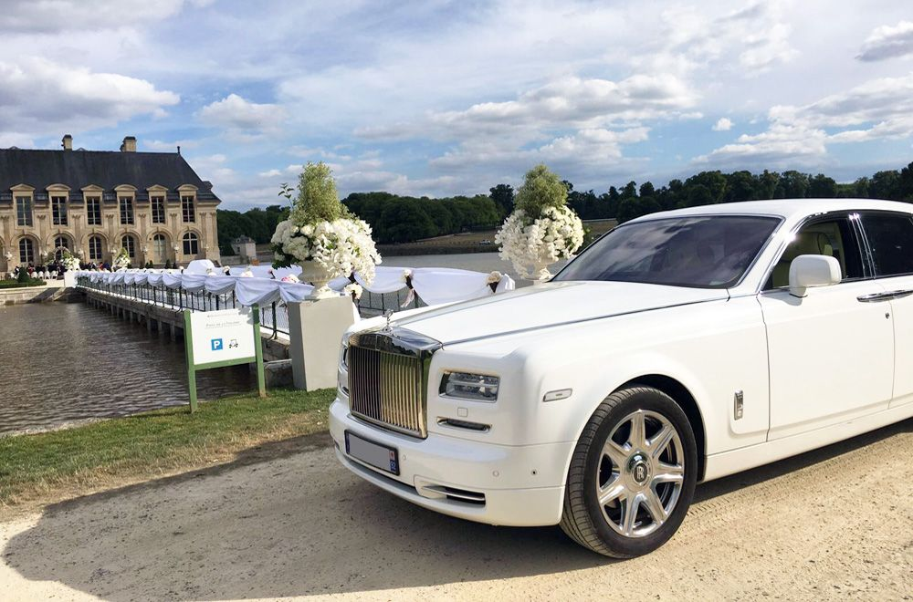
2018-03-17
Voiture magnifique!
Chauffeur ponctuel, service luxueux, nous recommandons fortement! 2018-03-17 2009-07-08 Superb'Sellerie Aéronautique, est une entreprise spécialisée dans la sellerie tapisserie sur…Chauffeur ponctuel, service luxueux, nous recommandons fortement! 2018-03-17 2009-07-08 Superb'Sellerie Aéronautique, est une entreprise spécialisée dans la sellerie tapisserie sur-mesure depuis plus de 10 ans. Ils opèrent dans le monde de l'automobile de luxe et de l'aéronautique. Reconnu internationalement, leur entrepôt est basé sur l'aéroport de Cannes-Mandelieu.
2009-07-08
Superb’Sellerie Aéronautique, une société au service de votre intérieur
Superb'Sellerie Aéronautique, est une entreprise spécialisée dans la sellerie tapisserie sur-mesure depuis plus de 10 ans. Ils opèrent dans le monde de l'automobile de luxe et de l…Superb'Sellerie Aéronautique, est une entreprise spécialisée dans la sellerie tapisserie sur-mesure depuis plus de 10 ans. Ils opèrent dans le monde de l'automobile de luxe et de l'aéronautique. Reconnu internationalement, leur entrepôt est basé sur l'aéroport de Cannes-Mandelieu afin d'offrir une accessibilité optimale et une sécurité sans faille à leurs clients, pour la réalisation d'intérieur sur mesure sur des avions de tourisme, jet privé ou hélicoptère . Leur métier est de personnaliser les appareils en leur apportant un style unique sans dénaturer l'intérieur. Ils n'utilisent que des matériaux nobles : cuir, peau d'autruche, alcantara, boiseries. Ils ont obtenus l'agrément des normes FAR 25-853 F et PART 145 et prochainement PART 21. Ces normes sont obligatoires dans le monde aéronautique, elles garantissent au client un respect sans faille pour la sécurité des passagers. « Un intérieur reflète son propriétaire » nous dit Laurent Le Skull, patron de cette entreprise familiale. Laurent, Agé de 38 ans heureux papa de 4 garçons et une fille âgés de 16 à 2 ans, s'est prêté au jeu de l'interview et à répondu à quelques questions pour nous. 1/ En quoi consiste votre métier? LL : Mon métier est un mélange entre création et réalisation des désirs de mes clients. Mon slogan est : Rêvez, nous réalisons ! Plus précisément le travail se déroule en 2 étapes : premièrement, à travers une discussion avec mes clients qui me décrivent leurs souhaits, j'essaie de faire ressortir leur style, leur personnalité. Deuxièmement, je gaine les différents éléments de cuir et relooke les sièges d'un design plus contemporain ou au contraire vintage. En général ils me confient l'intégralité de leur réalisation car ils me font confiance. C'est bien entendu là que je me sens le plus à l'aise et que je peux laisser s'exprimer mes dons d'artiste. Ils m'indiquent leur budget et je m'occupe du reste. Quand je fais un siège, je raconte une histoire, je suis le cuir, je trace une route. 2/ Comment vous est venu l'idée de personnaliser des avions privés ? LL : En réalité, tout a commencé avec des voitures. J'ai réalisé des intérieurs sur mesure pour des propriétaires de Porsche, Ferrari ou Lamborghini. Puis à l'occasion des différentes conversations avec certains d'entre eux, ils m'ont dit « Ah Laurent, si seulement tu pouvais faire la même chose avec mon avion ou mon hélicoptère » et comme je leur ai répondu que je pouvais, ainsi a débuté l'histoire. Bien entendu l'aéronautique est plus complexe que l'automobile et de nombreuses autorisations ont due être obtenues. 3/ Avez-vous d'autres projets encore plus osé? LL : L'aéronautique c'est déjà osé ! C'est de gros budgets, on n'a pas le droit à l'erreur. J'ai des clients célèbres ou des personnalités du monde des affaires qui m'ont sollicité pour leur yacht ou leur voilier. En fait, ce secteur est plus orienté vers l'ameublement que vers la sellerie pure. Mais, il y a certainement d'autres belles choses à faire. Pour l'instant je me concentre sur des réalisations qui s'orientent principalement vers le cockpit, tout ce qui se tourne vers le conducteur et les passagers. 4/ Avez-vous une anecdote à nous faire partager? LL : J'en ai plein... mais étant tenu par contrat je ne peux vous les révéler. Peut-être celle d'un client et ami qui m'a demandé de refaire l'intérieur de sa Ferrari. La base de travail était une Ferrari 360 Modena. Il souhaitait reproduire l'intérieur d'une Stradale, ce que je trouve fort dommage. Car réalisé un intérieur unique est beaucoup plus marquant que de reproduire quelque chose d'existant. En outre, il ne voulait pas de rouge. J'ai donc commandé le cuir, puis au fil de la réalisation je n'aimais pas ce que je faisais. Alors j'ai décidé de tout jeter et de recommencer, mais en rouge. J'avais une idée en tête et j'étais convaincu que le résultat serait magnifique. J'ai donc travaillé une semaine sur sa voiture. Le soir ou il est venu la chercher je l'ai disposée au milieu de l'atelier en éteignant les lumières. Puis j'ai allumé les lumières mon ami et ses proches venus pour l'occasion, étaient subjugués par cette réalisation. Il n'y avait rien de ce qu'il avait prévu mais pendant une heure je n'ai entendu que : « elle est magnifique, vraiment magnifique ». Aujourd'hui il ne veut plus s'en séparer car elle est unique. 5/Comment voyez-vous l'avenir de votre entreprise? LL : Notre société prospère un peu plus chaque année, d'autant que notre clientèle ne connait pas la crise. Avec mon contrat de préparateur, animateur avec TF1 ( www.automoto.fr ) nous avons de gros projets pour étendre nos idées dans l'aéronautique mais je vous en ai déjà trop dit... (rires). De nombreux designers font aussi appel à nous pour la réalisation de leurs projets, et des projets, ils en ont beaucoup ! L'exigence en matière d'originalité et de rapidité des réalisations ne cesse de croitre, or ce sont nos points forts, j'ai donc l'audace d'avoir confiance en l'avenir. Pour contacter Superb' Sellerie Aéronautique : 26, Aéroport Cannes-Mandelieu 06150 Cannes La Bocca Tel : 04 93 90 42 12 GSM : 06 61 17 88 36 info@superbsellerieaeronautique.com Leur site internet : www.superbsellerieaeronautique.com 2009-07-08 2018-07-05
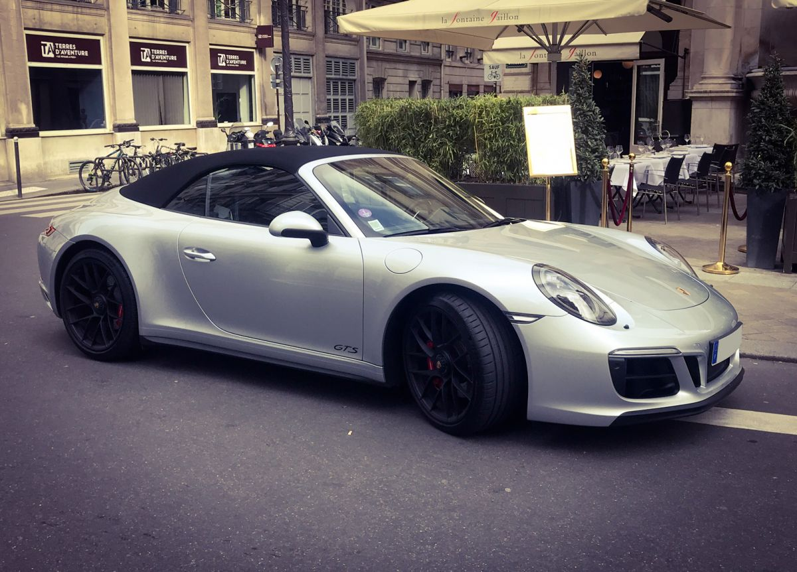
2018-07-05
Très bon service client et très réactif
Voiture en parfait état et bien équipé. Flexible sur les heures pour récupérer la voiture et la rendre. A refaire 2018-07-05 2017-08-28
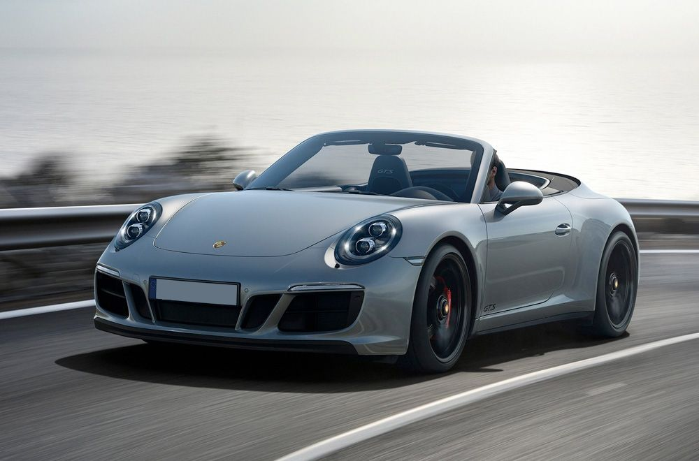
2017-08-28
Excellent Service de location pour voiture de prestige
Le personnel est très professionnel avec un très bon relationnel téléphonique, Accueil en agence super, Conseil sur le véhicule très bien, restitution du véhicule et ponctualité. A…Le personnel est très professionnel avec un très bon relationnel téléphonique, Accueil en agence super, Conseil sur le véhicule très bien, restitution du véhicule et ponctualité. Aucune fausse note pour son professionnalisme, tous ces services et conseils à donné à cette agence. Je recommande vivement cette agence. Service parfait. 2017-08-28 2015-12-07
2015-12-07
A day with my Son !
This day driving a Z4 was a moment of pure pleasure shared with my son. An experience to renew with Luxury Club ! 2015-12-07 2016-06-14
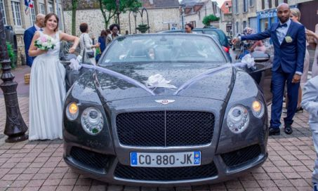
2016-06-14
Une Bentley pour une Mariée
Excellente agence de location de voiture de luxe et de sport en plein coeur de Paris où nous avons passé un excellent week-end à bord d'une Bentley GTC . Un service irréprochable e…Excellente agence de location de voiture de luxe et de sport en plein coeur de Paris où nous avons passé un excellent week-end à bord d'une Bentley GTC . Un service irréprochable et l'ensemble du personnel était joignable à tout moment. Tout était parfait, merci beaucoup! 2016-06-14 2009-10-14 Claudie Derchu âgée de 62 ans et heureuse retraitée, nous fait partager l'expérience de son stage de Pilotage au volant d'une Aston Matin sur le circuit de Montlhéry.
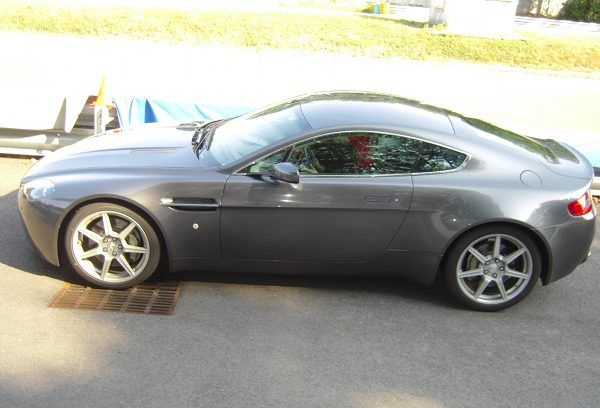
2009-10-14
Claudie Derchu nous fait partager son stage de Pilotage au volant d’une Aston Matin
Claudie Derchu âgée de 62 ans et heureuse retraitée, nous fait partager l'expérience de son stage de Pilotage au volant d'une Aston Matin sur le circuit de Montlhéry. 1/ Pour quell…Claudie Derchu âgée de 62 ans et heureuse retraitée, nous fait partager l'expérience de son stage de Pilotage au volant d'une Aston Matin sur le circuit de Montlhéry. 1/ Pour quelle occasion avez-vous participé à un stage de pilotage ? CD : Le stage fut l'objet de mon cadeau de Noël de la part de mes deux enfants Adeline et Thibault. 2/ Qu'est-ce qui vous attire chez Aston Martin ? CD : A vrai dire ce n'est pas moi qui ai choisi l'Aston Martin ; c'est la voiture qui a été conseillée aux enfants, peut-être au vu de mon âge et du fait qu'il s'agissait de ma première expérience sur un circuit... et puis c'est la voiture de James ce n'est pas rien ! 3/ La conduite sur circuit est-elle si différente que sur la route ? CD : Ah ! Que oui ! C'est un vrai bonheur que de pouvoir couper les virages à sa guise et appuyer sur l'accélérateur sans la peur du gendarme ou du radar ! 4/ La prise en main du véhicule se fait-elle facilement ? CD : En ce qui me concerne la prise en main ne fut pas évidente du point de vue des vitesses ; j'ai toujours entretenu de très bonnes relations avec les leviers de vitesse quelque soit le véhicule, hors là, les « vitesses séquentielles » furent très déroutantes, à la limite du « handicap ». Ceci dit, cela m'a valu une petite faveur, les deux premiers tours n'ayant pas été terribles à cause de ces « foutues » vitesses, le jeune et gentil moniteur m'accordé un tour supplémentaire ! Indépendamment des vitesses, la voiture « s'apprivoise » très bien, le moniteur met bien en confiance, je me suis tout de suite sentie à l'aise et en sécurité. 5/ Recommanderiez-vous LUXURY CLUB a des proches ? CD : Bien sûr, si l'occasion se présente je ne manquerai pas de recommander Luxury Club à des proches et moins proches avec commentaires à l'appui. CD : Voilà pour les réponses aux questions posées maintenant j'y vais de mon petit commentaire perso : L'accueil est vraiment très agréable, chacun des intervenants a un petit mot sympathique et toujours le sourire. J'ai été très émue par le bruit des moteurs tant à l'intérieur du véhicule que sur le stand, j'étais renvoyée à mon adolescence quand, interdite de sortir seule le soir, j'obligeais ma maman à m'accompagner sur la corniche où se tenait une des épreuves de vitesse du rallye du Touquet qui, à l'époque, était un rallye international (peut-être l'est-il encore ?). Ah ! Cette odeur de ricin ! Puis, à partir du moment où j'ai eu mon permis le plaisir de conduire ne m'a plus quittée ! Il y aura donc récidive, je ne sais encore sur laquelle de vos « grandes dames » je jetterai mon dévolu, le choix sera difficile, je me permettrai probablement de vous demander conseil. 2009-10-14 2016-03-02
2016-03-02
Mr. and Mrs. Cazayous driving a Porsche Targa GTS
Quality service at the height of the beautiful targa GTS . Unforgettable weekend at the wheel of the sports sublime.Luxury thank you to the club. 2016-03-02 2017-09-09
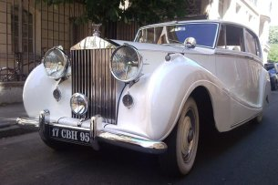
2017-09-09
Nous avons loué une Rolls Silver Wraith pour notre mariage
Tout a été parfait du début à la fin: la réactivité des échanges, un accueil chaleureux de la part de l'ensemble des membres de l'équipe et une grande flexibilité pour palier à nos…Tout a été parfait du début à la fin: la réactivité des échanges, un accueil chaleureux de la part de l'ensemble des membres de l'équipe et une grande flexibilité pour palier à nos contraintes organisationnelles. Le chauffeur qui nous a conduit était très sympathique. Il s'est également rendu disponible pour faciliter le déroulement de la journée et nous expliquer l'historique de la voiture. Nous recommandons vivement ce prestataire et n'hésiterons pas à le solliciter de nouveau pour l'organisation d'autres événements ! 2017-09-09 2019-02-14
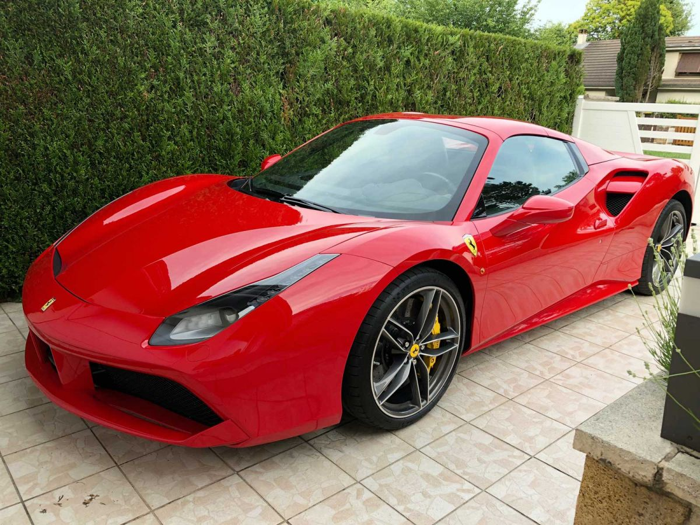
2019-02-14
Un week-end en Ferrari
Bonjour nous avons passé un excellent week-end au volant de cette Ferrari 488 ,le mariage était magnifique,nous vous remercions infiniment.. 2019-02-14 2018-09-18
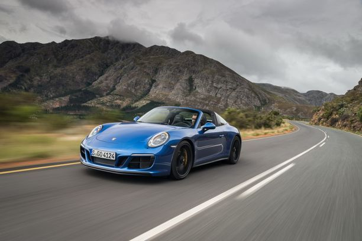
2018-09-18
Excellent prestataire
Voiture impeccable et très propre. Service client à l'écoute et devis sur mesure. A recommander fortement. 2018-09-18 2018-06-25
2009-05-13
Mariage en BMW Série 7
Mme Martine Mangeon (49 ans, Graphiste) et M. Dominique Mangeon (57 ans, Consultant) sont les heureux parents de trois garçons âgés de 27, 25 et 19 ans. Martine nous parle de son m…Mme Martine Mangeon (49 ans, Graphiste) et M. Dominique Mangeon (57 ans, Consultant) sont les heureux parents de trois garçons âgés de 27, 25 et 19 ans. Martine nous parle de son mariage et de la BMW Série 7 louée pour l'occasion. 1- Pour quelles raisons avez-vous fait appel à un service de voiture avec chauffeur ? MM : Mon mari et moi avons toujours été amateurs de grande berline. Nous avons donc songé à une voiture de maître pour ce jour si particulier ! Nous avons choisi une voiture avec chauffeur : il nous a conduit de la mairie à l'église, puis à la salle du vin d'honneur et enfin il a prit la tête du cortège. La soirée s'est terminée à bord d'une péniche à Paris. 2- Qu'est-ce qui vous a séduit chez BMW ? MM : Nous avons la chance de rouler en BMW tous les jours, mais pas encore en Série 7. Pour nos noces nous voulions une grande berline. C'est pourquoi nous nous sommes tourné naturellement vers la marque à l'hélice. Je suis fan d'automobile, et j'ai été agréablement surprise par le confort, l'insonorisation, le volume intérieur et l'élégance de cette voiture. En deux mots elle m'a « bluffée » ! 3- Recommanderiez-vous les services de LUXURY CLUB à vos proches ? MM : C'est une bonne question... Ne stressez pas, la réponse est oui ! Nous n'avons aucune remarque négative à formuler sur cette prestation, bien au contraire, tout s'est déroulé à merveille, et surtout nous voulons remercier notre chauffeur, Vincent, qui a été d'une gentillesse et d'une disponibilité incroyable. 2009-05-13 2012-04-04 Pierre Begny, 27 ans (en couple), collaborateur dans la fonction publique, nous fait part de ses impressions sur son vol en Ecureuil AS350.
2012-04-04
Pierre Begny, nous fait part de ses impressions sur son vol en Hélicoptère
Pierre Begny, 27 ans (en couple), collaborateur dans la fonction publique, nous fait part de ses impressions. M. BEGNY, vous avez récemment fait appel aux services de LUXURY CLUB p…Pierre Begny, 27 ans (en couple), collaborateur dans la fonction publique, nous fait part de ses impressions. M. BEGNY, vous avez récemment fait appel aux services de LUXURY CLUB pour un transfert en hélicoptère, dans quel cadre deviez-vous vous déplacer ? PB : J'ai fait appel aux services de LUXURY CLUB pour effectuer un transfert en hélicoptère pour affaires car je devais effectuer une liaison en France dans un délai très court. Quelles étaient vos attentes ? Cette prestation a-t-elle répondu à vos souhaits? PB : Les contraintes étaient assez importantes puisque j'avais un impératif de temps et de lieux impossibles à résoudre avec un trajet en voiture ou en train. La prestation a parfaitement répondu à mes attentes, je suis arrivé à l'heure et la compagnie était vraiment fiable et professionnelle. Vous avez, par la suite, de nouveau fait appel aux services de LUXURY CLUB pour la location de véhicules. Quelles qualités vous ont incitées à passer de nouveau par LUXURY CLUB ? PB : Ayant apprécié leurs services lors de ma première demande, il m'a semblé naturel de solliciter LUXURY CLUB à nouveau. Il s'avère que les véhicules sont propres et bien suivis mécaniquement. J'ai eu l'occasion de louer une BMW Z4 durant quelques week-ends et j'avoue avoir pris beaucoup de plaisir ! Je tiens également à souligner que l'équipe s'arrangeait toujours pour me faciliter la location en fonction de mon agenda, ce qui n'est pas toujours évident. Comment avez-vous eu connaissance de la gamme de services proposés ? PB : J'ai découvert LUXURY CLUB sur la toile. En navigant sur le site, et après renseignements, ils semblaient être les plus sérieux. Durant le transfert en hélicoptère, j'ai consulté la brochure expliquant les différents services proposés par la société, dont la location de voiture de prestige, et cette dernière a retenu mon attention. C'est un véritable confort d'avoir toujours les mêmes interlocuteurs... Cela facilite grandement mes demandes et surtout je gagne du temps! Comment décririez-vous le service LUXURY CLUB à votre entourage? PB : Une entreprise sérieuse, professionnelle, compétente et surtout animée par une équipe jeune et dynamique. 2012-04-04 2016-03-18
2016-03-18
Jean- Marc , shares his feelings after renting a Porsche 911 GT3 RS
How beautiful and good! The Porsche 991 GT3 RS can do everything .It is versatile and extreme. Thank you for Luxury Club for this moment of happiness. Rent this Porsche 911 GT3 RS with Luxury Club . 2016-03-18 2019-04-08
2019-04-08
Rating of 10/10
2017-04-24
2017-04-24
Un super service, vraiment excellent, tout était parfait
Du coup de téléphone pour quelques renseignements jusqu'a la restitution de la voiture en passant par la prise en main et les explications pour ne pas être perdu une fois sur la ro…Du coup de téléphone pour quelques renseignements jusqu'a la restitution de la voiture en passant par la prise en main et les explications pour ne pas être perdu une fois sur la route. Pleins de bons souvenir, la Ferrari 458 Spyder quelle voiture !!! Vraiment magnifique. Après mon expérience, je recommande vraiment Luxury Club pour leur professionnalisme et leur excellent service que je n'oublierais pas. Je garde leur numéro dans mes contactes et a l'occasion c'est chez eux que je relouerais. Un grand grand merci, a très bientôt. 2017-04-24 2009-03-18 Mme Mallet (44 ans, Chef d'Entreprise en Relations Humaines) et son époux (50 ans, Chef de projet pour le groupe Shlumberger), heureux parents de trois enfants, nous parlent de leur week-end en Aston Martin V8 Roadster.
2009-03-18
Week-end en Aston Martin V8 Roadster
Mme Mallet (44 ans, Chef d'Entreprise en Relations Humaines) et son époux (50 ans, Chef de projet pour le groupe Shlumberger), heureux parents de trois enfants, nous parlent de leu…Mme Mallet (44 ans, Chef d'Entreprise en Relations Humaines) et son époux (50 ans, Chef de projet pour le groupe Shlumberger), heureux parents de trois enfants, nous parlent de leur week-end en Aston Martin V8 Roadster. 1- Comment vous est venue l'envie de prendre possession, pour un week-end, d'une Aston Martin ? MM : Et bien, je souhaitais faire une surprise mémorable à mon mari pour ses 50 ans. Ce que j'ignorais c'est qu'il en rêvait depuis son plus jeune âge. Il me l'a avoué hier soir en se remémorant nos bons moments. Il ne pouvait pas espérer mieux... Et moi qui hésitais avec une italienne ! En fait, il préfère de loin les belles anglaises. Enfin, tout le monde en a bien profité, même les enfants. Ils n'ont pas conduit bien sûr mais ont vécu un moment privilégié avec leur papa. 2- Pouvez-vous nous commenter votre séjour ? MM : Nous sommes partis de Magny-les-Hameaux (78, proche de Versailles) direction Saumur, pour rejoindre le reste de la famille qui nous attendait dans la propriété de nos beaux parents. Ils habitent un petit village surplombant les hauteurs de Saumur. Autant vous dire que le premier trajet sur autoroute a permis à Louis, mon époux, de se mettre en jambe avec cette Aston Martin, qui fut sienne pour le week-end. Tout compte fait, à part le samedi soir où nous lui avons offert ses cadeaux et dîné en famille, il a passé le reste du temps dans la voiture... 3- Avez-vous une anecdote à nous faire partager ? MM : Pas vraiment si ce n'est les montées en régime et le bruit de ce moteur qui est véritablement impressionnant, voir envoutant... Ah si, lorsque nous sommes partis remettre du carburant on a fait sensation à la petite station service du coin. Les gens ne regardaient plus que la voiture. C'est surtout le regard admiratif des enfants qui était touchant. Peut être le même que mon mari à son plus jeune âge... Et puis on a l'étrange sensation quand un feu tricolore repasse au vert, que les automobilistes attendent que l'Aston Martin démarre en premier. Certainement pour l'admirer et entendre rugir ce fabuleux V8. 4- Comment avez-vous connu LUXURY CLUB ? Recommanderiez-vous leurs services ? MM : Je les ai connus par l'intermédiaire d'un de leur partenaire, M. William Bonneton (Sté HéliParis) qui m'a recommandé à eux. Je les ai également retrouvés sur Internet. Les autres sociétés que j'ai contactées ne m'ont pas réservées le même accueil. Ils ont vraiment pris le temps de m'écouter. Et rien à redire sur la disponibilité et le service. Le véhicule a été livré à notre domicile pour parfaire la surprise et nous leur avons rendu sur Paris le dimanche soir. Pour répondre à votre deuxième question : oui, je les recommande déjà à ma famille et mes amis. Nous avons d'ailleurs l'intention de repartir pour un séjour dans une résidence secondaire à Villers-sur-Mer. Nous avons un appartement avec vue sur l'océan et nous souhaiterions partir avec des amis au volant de belles carrosseries. 2009-03-18 2016-09-07
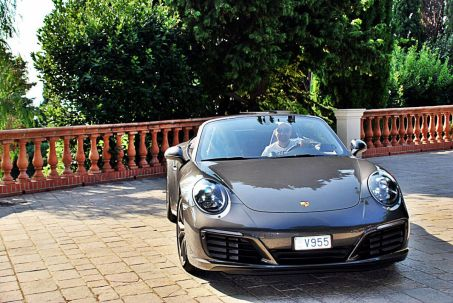
2016-09-07
Le top !
Super véhicule cette Porsche 911 , le TOP ! Tout c’est très bien passé et super accueil à CANNES.Opération à renouveler, je ne manquerais pas de vous solliciter !!! 2016-09-07 2016-03-18
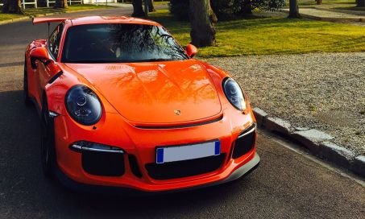
2016-03-18
Jean-Marc, nous fait partager ses impressions après la location d’une Porsche 911 GT3 RS
Que c’est beau et bon ! Cette Porsche 991 GT3 RS permet de tout faire. Elle est polyvalente et extrême. Merci à Luxury Club pour ce moment de bonheur. Louez cette Porsche 911 GT3 R…Que c’est beau et bon ! Cette Porsche 991 GT3 RS permet de tout faire. Elle est polyvalente et extrême. Merci à Luxury Club pour ce moment de bonheur. Louez cette Porsche 911 GT3 RS avec Luxury Club. 2016-03-18 2019-06-19
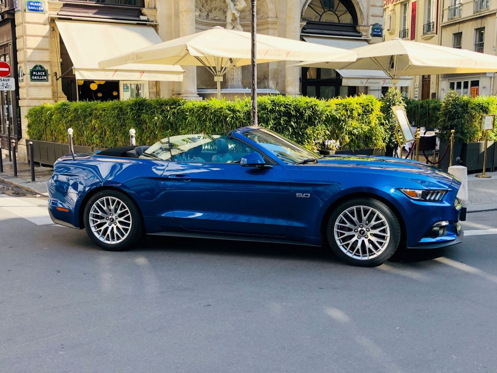
2019-06-19
Nous avons choisi de faire confiance à Luxury Club
2019-06-19 2018-07-02
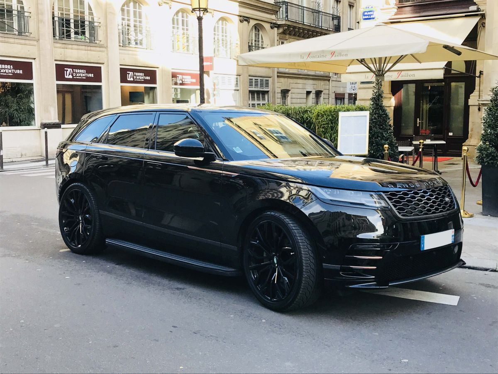
2018-07-02
Sans aucune hésitation ma prochaine location se fera par cette société
Je viens de louer un Range Rover VELAR les prestations étaient de hautes qualités tant par le véhicule que par le professionnalisme de LUXURY CLUB. Merci encore vous avez contribue…Je viens de louer un Range Rover VELAR les prestations étaient de hautes qualités tant par le véhicule que par le professionnalisme de LUXURY CLUB. Merci encore vous avez contribuez à ce moment privilégié que je viens de vivre et de faire vivre 2018-07-02 2016-05-27
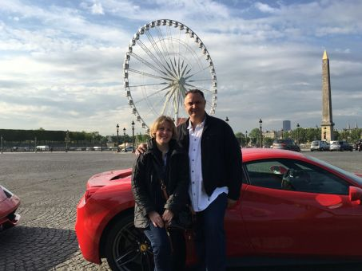
2016-05-27
Road Trip by Luxury Club
Bonjour Luxury Club, Nous avons passé une super journée, tant en animation par notre guide qui gère de main de Maître le Road Trip qu'avec vos vehicules de rêves !!!! Nous sommes b…Bonjour Luxury Club, Nous avons passé une super journée, tant en animation par notre guide qui gère de main de Maître le Road Trip qu'avec vos vehicules de rêves !!!! Nous sommes bluffés par notre journée et je pense que nous allons nous revoir rapidement tellement cette formule nous a séduit. Merci et à bientôt !!! 2016-05-27 2009-05-13 Mme Martine Mangeon (49 ans) et M. Dominique Mangeon (57 ans) sont les heureux parents de trois garçons. Martine nous parle de son mariage en BMW Série 7.
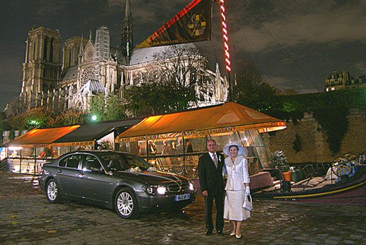
2009-05-13
Mariage en BMW Série 7
Mme Martine Mangeon (49 ans, Graphiste) et M. Dominique Mangeon (57 ans, Consultant) sont les heureux parents de trois garçons âgés de 27, 25 et 19 ans. Martine nous parle de son m…Mme Martine Mangeon (49 ans, Graphiste) et M. Dominique Mangeon (57 ans, Consultant) sont les heureux parents de trois garçons âgés de 27, 25 et 19 ans. Martine nous parle de son mariage et de la BMW Série 7 louée pour l'occasion. 1- Pour quelles raisons avez-vous fait appel à un service de voiture avec chauffeur ? MM : Mon mari et moi avons toujours été amateurs de grande berline. Nous avons donc songé à une voiture de maître pour ce jour si particulier ! Nous avons choisi une voiture avec chauffeur : il nous a conduit de la mairie à l'église, puis à la salle du vin d'honneur et enfin il a prit la tête du cortège. La soirée s'est terminée à bord d'une péniche à Paris. 2- Qu'est-ce qui vous a séduit chez BMW ? MM : Nous avons la chance de rouler en BMW tous les jours, mais pas encore en Série 7. Pour nos noces nous voulions une grande berline. C'est pourquoi nous nous sommes tourné naturellement vers la marque à l'hélice. Je suis fan d'automobile, et j'ai été agréablement surprise par le confort, l'insonorisation, le volume intérieur et l'élégance de cette voiture. En deux mots elle m'a « bluffée » ! 3- Recommanderiez-vous les services de LUXURY CLUB à vos proches ? MM : C'est une bonne question... Ne stressez pas, la réponse est oui ! Nous n'avons aucune remarque négative à formuler sur cette prestation, bien au contraire, tout s'est déroulé à merveille, et surtout nous voulons remercier notre chauffeur, Vincent, qui a été d'une gentillesse et d'une disponibilité incroyable. 2009-05-13 2019-04-08
2019-04-08
Note de 10/10
2019-04-08 2016-04-05
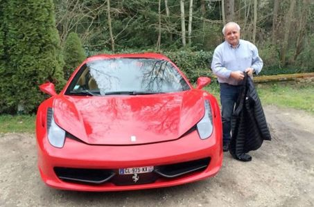
2016-04-05
Claude nous fait partager un week-end en Ferrari
Un petit mot pour vous remercier de nouveau pour ce magnifique week end que je viens de passer et vous faire partager quelques photos (surtout pour ceux qui aiment les véhicules d’…Un petit mot pour vous remercier de nouveau pour ce magnifique week end que je viens de passer et vous faire partager quelques photos (surtout pour ceux qui aiment les véhicules d’exception).La Ferrari , mon fils dirait que c'est une tuerie (mais lui, ça ne l’intéresse pas… ). Un vrai bonheur, un souvenir inoubliable, une voiture de rêve pour tous les fans d'automobile. Une auberge près de Sens à Villeneuve l'Archevêque pour donner un but au circuit et apprécier un bon diner avec Sylvie. Un merveilleux dimanche ensoleillé.Encore merci à tous pour ce super cadeau et un très très grand merci en particulier à Benoit et Jean Marc qui ont permis ce grand moment avec LUXURY CLUB . 2016-04-05 2016-06-14
2016-06-14
A Bentley for a Wedding
Excellent luxury car rental agency and sports in the heart of Paris where we had a great weekend aboard a Bentley GTC. Impeccable service and the entire staff was available at all …Excellent luxury car rental agency and sports in the heart of Paris where we had a great weekend aboard a Bentley GTC. Impeccable service and the entire staff was available at all times. Everything was perfect, thank you! 2016-06-14 2009-07-08 Superb'Sellerie Aéronautique, est une entreprise spécialisée dans la sellerie tapisserie sur-mesure depuis plus de 10 ans. Ils opèrent dans le monde de l'automobile de luxe et de l'aéronautique. Reconnu internationalement, leur entrepôt est basé sur l'aéroport de Cannes-Mandelieu.
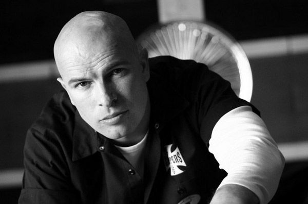
2009-07-08
Superb’Sellerie Aéronautique, une société au service de votre intérieur
Superb'Sellerie Aéronautique, est une entreprise spécialisée dans la sellerie tapisserie sur-mesure depuis plus de 10 ans. Ils opèrent dans le monde de l'automobile de luxe et de l…Superb'Sellerie Aéronautique, est une entreprise spécialisée dans la sellerie tapisserie sur-mesure depuis plus de 10 ans. Ils opèrent dans le monde de l'automobile de luxe et de l'aéronautique. Reconnu internationalement, leur entrepôt est basé sur l'aéroport de Cannes-Mandelieu afin d'offrir une accessibilité optimale et une sécurité sans faille à leurs clients, pour la réalisation d'intérieur sur mesure sur des avions de tourisme, jet privé ou hélicoptère . Leur métier est de personnaliser les appareils en leur apportant un style unique sans dénaturer l'intérieur. Ils n'utilisent que des matériaux nobles : cuir, peau d'autruche, alcantara, boiseries. Ils ont obtenus l'agrément des normes FAR 25-853 F et PART 145 et prochainement PART 21. Ces normes sont obligatoires dans le monde aéronautique, elles garantissent au client un respect sans faille pour la sécurité des passagers. « Un intérieur reflète son propriétaire » nous dit Laurent Le Skull, patron de cette entreprise familiale. Laurent, Agé de 38 ans heureux papa de 4 garçons et une fille âgés de 16 à 2 ans, s'est prêté au jeu de l'interview et à répondu à quelques questions pour nous. 1/ En quoi consiste votre métier? LL : Mon métier est un mélange entre création et réalisation des désirs de mes clients. Mon slogan est : Rêvez, nous réalisons ! Plus précisément le travail se déroule en 2 étapes : premièrement, à travers une discussion avec mes clients qui me décrivent leurs souhaits, j'essaie de faire ressortir leur style, leur personnalité. Deuxièmement, je gaine les différents éléments de cuir et relooke les sièges d'un design plus contemporain ou au contraire vintage. En général ils me confient l'intégralité de leur réalisation car ils me font confiance. C'est bien entendu là que je me sens le plus à l'aise et que je peux laisser s'exprimer mes dons d'artiste. Ils m'indiquent leur budget et je m'occupe du reste. Quand je fais un siège, je raconte une histoire, je suis le cuir, je trace une route. 2/ Comment vous est venu l'idée de personnaliser des avions privés ? LL : En réalité, tout a commencé avec des voitures. J'ai réalisé des intérieurs sur mesure pour des propriétaires de Porsche, Ferrari ou Lamborghini. Puis à l'occasion des différentes conversations avec certains d'entre eux, ils m'ont dit « Ah Laurent, si seulement tu pouvais faire la même chose avec mon avion ou mon hélicoptère » et comme je leur ai répondu que je pouvais, ainsi a débuté l'histoire. Bien entendu l'aéronautique est plus complexe que l'automobile et de nombreuses autorisations ont due être obtenues. 3/ Avez-vous d'autres projets encore plus osé? LL : L'aéronautique c'est déjà osé ! C'est de gros budgets, on n'a pas le droit à l'erreur. J'ai des clients célèbres ou des personnalités du monde des affaires qui m'ont sollicité pour leur yacht ou leur voilier. En fait, ce secteur est plus orienté vers l'ameublement que vers la sellerie pure. Mais, il y a certainement d'autres belles choses à faire. Pour l'instant je me concentre sur des réalisations qui s'orientent principalement vers le cockpit, tout ce qui se tourne vers le conducteur et les passagers. 4/ Avez-vous une anecdote à nous faire partager? LL : J'en ai plein... mais étant tenu par contrat je ne peux vous les révéler. Peut-être celle d'un client et ami qui m'a demandé de refaire l'intérieur de sa Ferrari. La base de travail était une Ferrari 360 Modena. Il souhaitait reproduire l'intérieur d'une Stradale, ce que je trouve fort dommage. Car réalisé un intérieur unique est beaucoup plus marquant que de reproduire quelque chose d'existant. En outre, il ne voulait pas de rouge. J'ai donc commandé le cuir, puis au fil de la réalisation je n'aimais pas ce que je faisais. Alors j'ai décidé de tout jeter et de recommencer, mais en rouge. J'avais une idée en tête et j'étais convaincu que le résultat serait magnifique. J'ai donc travaillé une semaine sur sa voiture. Le soir ou il est venu la chercher je l'ai disposée au milieu de l'atelier en éteignant les lumières. Puis j'ai allumé les lumières mon ami et ses proches venus pour l'occasion, étaient subjugués par cette réalisation. Il n'y avait rien de ce qu'il avait prévu mais pendant une heure je n'ai entendu que : « elle est magnifique, vraiment magnifique ». Aujourd'hui il ne veut plus s'en séparer car elle est unique. 5/Comment voyez-vous l'avenir de votre entreprise? LL : Notre société prospère un peu plus chaque année, d'autant que notre clientèle ne connait pas la crise. Avec mon contrat de préparateur, animateur avec TF1 ( www.automoto.fr ) nous avons de gros projets pour étendre nos idées dans l'aéronautique mais je vous en ai déjà trop dit... (rires). De nombreux designers font aussi appel à nous pour la réalisation de leurs projets, et des projets, ils en ont beaucoup ! L'exigence en matière d'originalité et de rapidité des réalisations ne cesse de croitre, or ce sont nos points forts, j'ai donc l'audace d'avoir confiance en l'avenir. Pour contacter Superb' Sellerie Aéronautique : 26, Aéroport Cannes-Mandelieu 06150 Cannes La Bocca Tel : 04 93 90 42 12 GSM : 06 61 17 88 36 info@superbsellerieaeronautique.com Leur site internet : www.superbsellerieaeronautique.com 2009-07-08 2018-07-02
2018-07-02
Qualité des voitures et du service
Très pro, ce qui est rare dans le secteur... J'ai loué une Porsche macan GTS . 2018-07-02 2009-12-16 François Vieau âgé de 53 ans, travaillant dans la finance, marié et heureux pap…Très pro, ce qui est rare dans le secteur... J'ai loué une Porsche macan GTS . 2018-07-02 2009-12-16 François Vieau âgé de 53 ans, travaillant dans la finance, marié et heureux papa de 4 enfants (29, 26, 23 et 15 ans) nous fait partager l'expérience de son stage de pilotage au volant d'une Porsche 997 GT3 RS sur le circuit de Trappes.
2009-12-16
François Vieau nous fait partager son stage de Pilotage au volant d’une Porsche 911 GT3
François Vieau âgé de 53 ans, travaillant dans la finance, marié et heureux papa de 4 enfants (29, 26, 23 et 15 ans) nous fait partager l'expérience de son stage de pilotage au vol…François Vieau âgé de 53 ans, travaillant dans la finance, marié et heureux papa de 4 enfants (29, 26, 23 et 15 ans) nous fait partager l'expérience de son stage de pilotage au volant d'une Porsche 997 GT3 RS sur le circuit de Trappes. 1/ Pour quelle occasion avez-vous participé à un stage de pilotage ? FV : C'était le cadeau d'anniversaire de mon fils Pierre-François, âgé de 29 ans qui souhaitait partager avec moi ses propres sensations et me faire un cadeau qui reste en mémoire, objectifs pleinement atteints, ai tout dans la tête... 2/ Est-ce qu'une Porsche GT3 RS est si différente d'une voiture de tourisme ? FV : Bien sur, c'est fou ! Surtout au niveau du freinage, si puissant et autorisant un freinage de dernière seconde, impressionnant...et que dire de la puissance d'accélération, tout simplement enivrant ! C'est une voiture rivée au sol, elle bénéficie d'une tenue de route sans égale, à ma connaissance en tous cas. 3/ La conduite sur circuit est-elle si différente que sur la route ? FV : Oui surtout les 3 points de virage, not so easy... Mais on peut profiter pleinement des ressources de la voiture. A ne pas faire sur route ouverte ! 4/ La prise en main du véhicule se fait-elle facilement ? FV : Aucun problème et le tour de chauffe avec l'instructeur très pro et sympa lève toutes les angoisses. Après l'excitation prend le dessus. Un peu d'appréhension au moment de tourner la clef puis dès que le 6 cylindres se met à vibrer la magie fait le reste. 5/ Recommanderiez-vous LUXURY CLUB a des proches ? FV : Oui, mais juste une suggestion les lignes droites sont trop courtes pour profiter de la puissance de l'auto. 2009-12-16 2012-04-04 Pierre Begny, 27 ans (en couple), collaborateur dans la fonction publique, nous fait part de ses impressions sur son vol en Ecureuil AS350.
2012-04-04
Pierre Begny, nous fait part de ses impressions sur son vol en Hélicoptère
Pierre Begny, 27 ans (en couple), collaborateur dans la fonction publique, nous fait part de ses impressions. M. BEGNY, vous avez récemment fait appel aux services de LUXURY CLUB p…Pierre Begny, 27 ans (en couple), collaborateur dans la fonction publique, nous fait part de ses impressions. M. BEGNY, vous avez récemment fait appel aux services de LUXURY CLUB pour un transfert en hélicoptère, dans quel cadre deviez-vous vous déplacer ? PB : J'ai fait appel aux services de LUXURY CLUB pour effectuer un transfert en hélicoptère pour affaires car je devais effectuer une liaison en France dans un délai très court. Quelles étaient vos attentes ? Cette prestation a-t-elle répondu à vos souhaits? PB : Les contraintes étaient assez importantes puisque j'avais un impératif de temps et de lieux impossibles à résoudre avec un trajet en voiture ou en train. La prestation a parfaitement répondu à mes attentes, je suis arrivé à l'heure et la compagnie était vraiment fiable et professionnelle. Vous avez, par la suite, de nouveau fait appel aux services de LUXURY CLUB pour la location de véhicules. Quelles qualités vous ont incitées à passer de nouveau par LUXURY CLUB ? PB : Ayant apprécié leurs services lors de ma première demande, il m'a semblé naturel de solliciter LUXURY CLUB à nouveau. Il s'avère que les véhicules sont propres et bien suivis mécaniquement. J'ai eu l'occasion de louer une BMW Z4 durant quelques week-ends et j'avoue avoir pris beaucoup de plaisir ! Je tiens également à souligner que l'équipe s'arrangeait toujours pour me faciliter la location en fonction de mon agenda, ce qui n'est pas toujours évident. Comment avez-vous eu connaissance de la gamme de services proposés ? PB : J'ai découvert LUXURY CLUB sur la toile. En navigant sur le site, et après renseignements, ils semblaient être les plus sérieux. Durant le transfert en hélicoptère, j'ai consulté la brochure expliquant les différents services proposés par la société, dont la location de voiture de prestige, et cette dernière a retenu mon attention. C'est un véritable confort d'avoir toujours les mêmes interlocuteurs... Cela facilite grandement mes demandes et surtout je gagne du temps! Comment décririez-vous le service LUXURY CLUB à votre entourage? PB : Une entreprise sérieuse, professionnelle, compétente et surtout animée par une équipe jeune et dynamique. 2012-04-04 2015-08-17
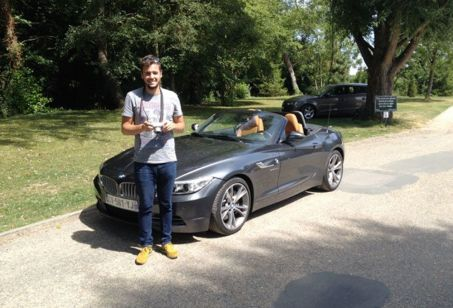
2015-08-17
Une journée avec mon Fils !
Cette journée au volant d'une Z4 a été un moment de pur plaisir partagé avec mon fils. Une expérience à renouveler avec Luxury Club ! 2015-08-17 2009-06-17 Mme Catherine Lavit et M…Cette journée au volant d'une Z4 a été un moment de pur plaisir partagé avec mon fils. Une expérience à renouveler avec Luxury Club ! 2015-08-17 2009-06-17 Mme Catherine Lavit et M. Jean-Christophe Lavit (57 ans), gèrent une douzaine de restaurants sur l'Île de la Réunion. Ils ont déjà été propriétaires, d'une Aston Martin DB7, d'une Porsche 911 turbo et d'une Mercedes 500 SL.
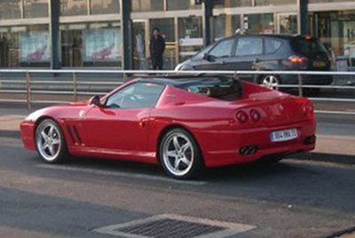
2009-06-17
Au volant d’une Ferrari 575 SuperAmerica
Mme Catherine Lavit et M. Jean-Christophe Lavit (57 ans), gèrent une douzaine de restaurants sur l'Île de la Réunion. Ils ont déjà été propriétaires, d'une Aston Martin DB7, d'une …Mme Catherine Lavit et M. Jean-Christophe Lavit (57 ans), gèrent une douzaine de restaurants sur l'Île de la Réunion. Ils ont déjà été propriétaires, d'une Aston Martin DB7, d'une Porsche 911 turbo et d'une Mercedes 500 SL. Aujourd'hui ils préfèrent louer et changer régulièrement de voitures sans avoir de contraintes. 1- Qu'est-ce qui vous a séduit chez Ferrari ? JCL : Le nom, le mythe Ferrari ! J'ai donc loué chez LUXURY CLUB une 575 Superamerica d'une impressionnante facilitée de conduite. J'avais déjà essayé une F430, mais rien à voir... La Superamerica est « EXTRAORDINAIRE ». Belle, confortable (et oui c'est possible) et un son stupéfiant due à une ligne complète d'échappement en inox. J'ai enfin compris pourquoi Ferrari était un MYTHE !!! Et je l'ai encore mieux assimilé sur la route. Avec plus de 550ch (Merci Coyotte...), toutes les voitures se rangent pour vous laisser passer et lorsque vous vous garez c'est l'attroupement. On en arrive même à se sentir gêné. Les questions sont sympas et le sourire est sur tous les visages, le mythe, toujours le mythe !!! Sachant que si vous avez de la famille et beaucoup d'amis, vous devrez obligatoirement faire le tour du quartier ou le tour de la ville. 2- Pour qu'elle occasion avez-vous loué cette voiture ? JCL : Nous avons une propriété proche de Tours ce qui me permet d'assouvir notre 2ème passion la Chasse, la première étant la pêche. Nous avons donc profité d'un voyage de 5 jours en métropole à l'occasion de nos 30 ans de mariage pour louer ce véhicule ! 3- Je crois que votre épouse est détentrice d'un record un peu particulier, pouvez-vous nous en dire plus ? JCL : Oui, la pêche sportive n'est pas l'apanage des hommes puisque le plus gros marlin pris à ce jour est celui pêché par mon épouse, le 12 octobre 2003 dans les eaux de La Réunion. Il s'agissait d'un marlin bleu de 551 kilos pris avec une ligne de 130 livres, après 3h30 de combat ! Deux autres records sont détenus par Catherine pour un thon Albacore de 96,600 kg et un Wahoo de 49 kg pêchés en 2006 4- Qu'est-ce qui vous à séduit chez LUXURY CLUB ? JCL : Le dynamisme, l'efficacité et un service sur mesure : livrée à la descente de l'avion, papiers administratifs prêts, la voiture était impeccable et le tout s'est passé très rapidement. Je vais prochainement faire de nouveau appel à LUXURY CLUB, mais que louer après une Superamerica ? Peut-être la nouvelle California ? Photo du record de Mme Lavit 2009-06-17 2012-06-19 Vincent FROMONT, a partagé 2 jours avec son fils de 19 ans en FERRARI 458 spider dans la Drôme. Il nous fait partager l'expérience de son week-end au volant de cette nouvelle italienne.
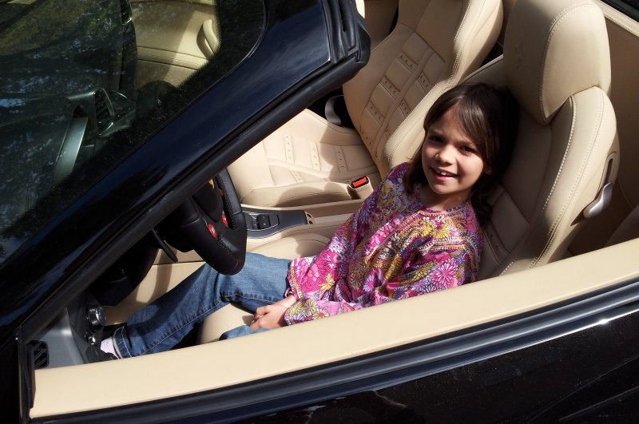
2012-06-19
Vincent, a partagé 2 jours avec son fils de 19 ans en FERRARI 458 spider dans la Drôme.


%20-%20upgrades.jpg)